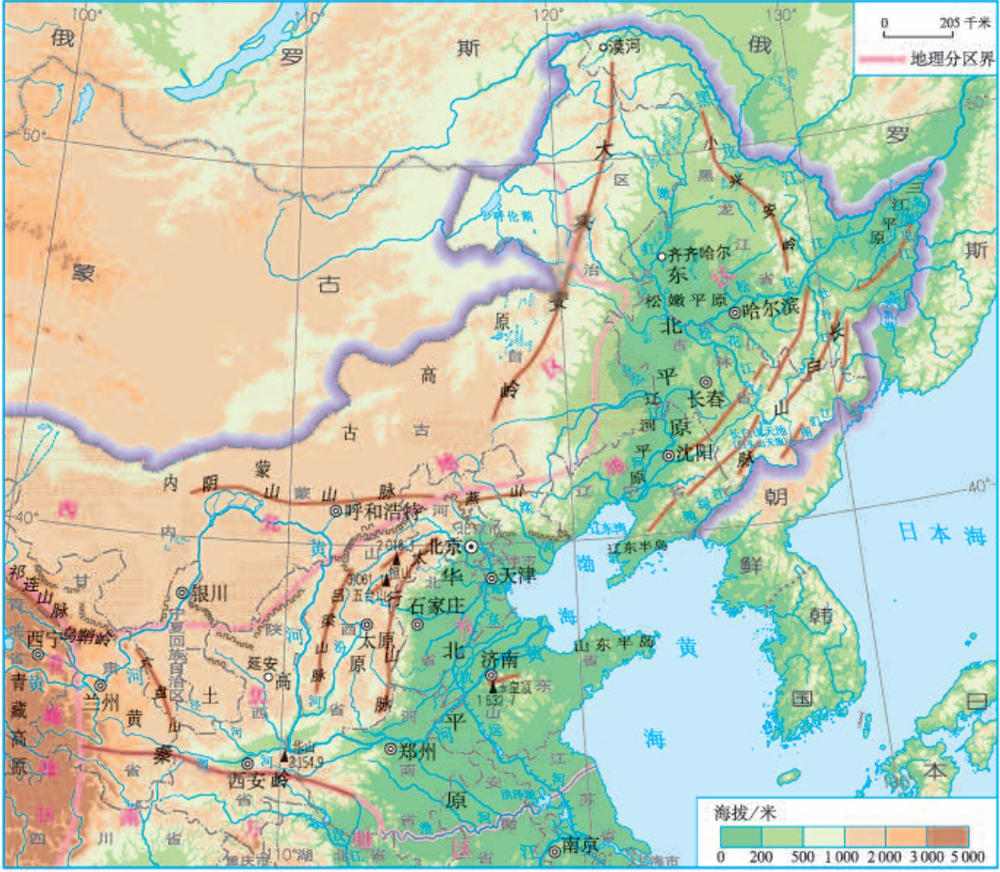
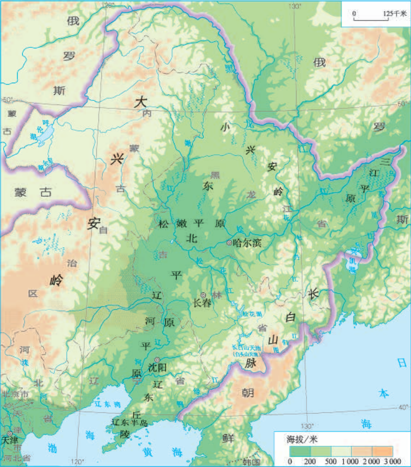
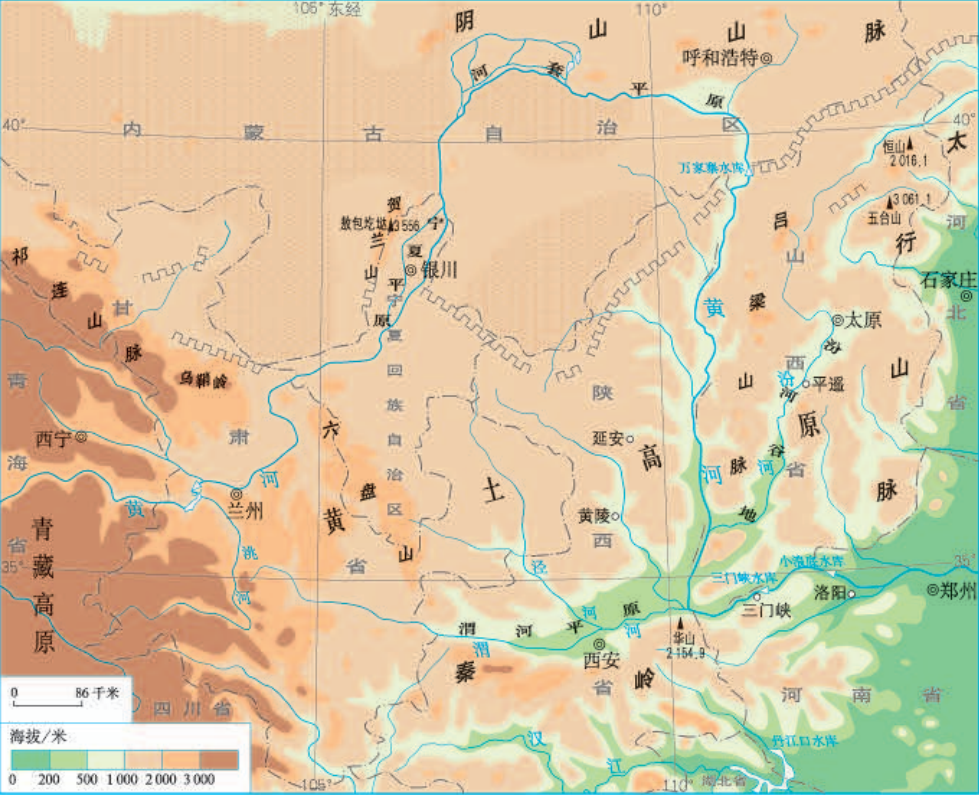
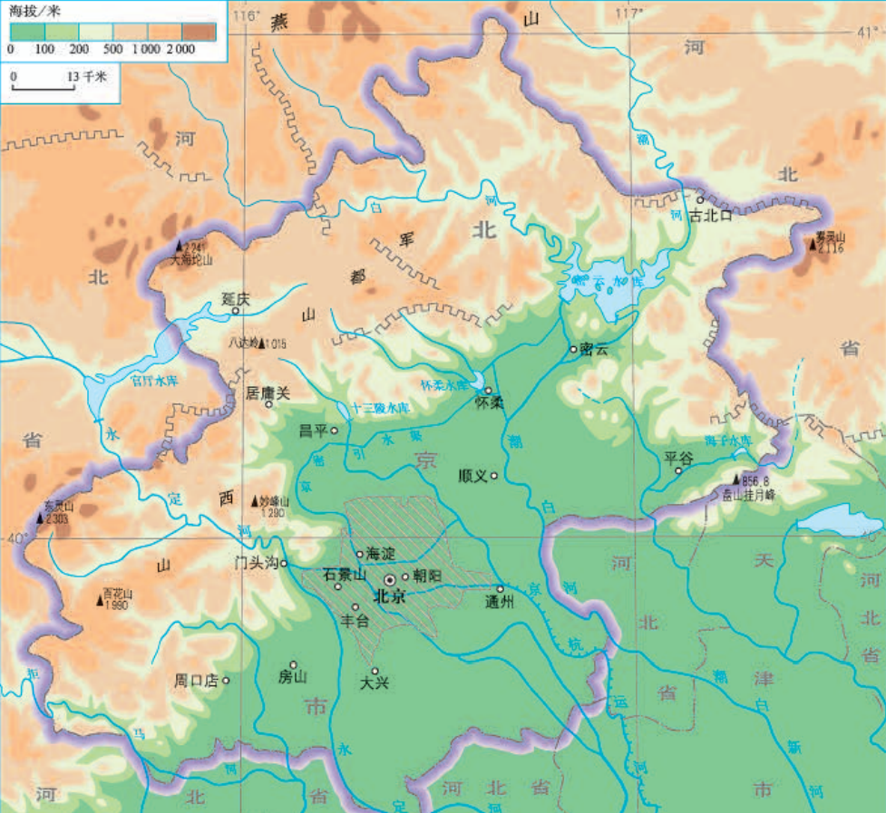

第十六章--北方地区
位置
北方地区大体位于大兴安岭、青藏高原以东，内蒙古高原以南，秦岭淮河以北，东临渤海和黄海
北方地区的地形
- 以平原和高原为主（北方地区地形特点）
- 主要地形区：东北平原、华北平原、黄土高原
北方地区的气候
- 北方地区跨我国寒温带、中温带、暖温带
- 北方地区大部分位于温带季风气候:冬季寒冷，夏季炎热，最冷月平均气温<0℃,最热月平均气温＞20℃
- 北方地区年平均降水量为400mm-800mm，属于半湿润区，降水季节分配不均，主要集中在夏季
南方北方气温差异大：纬度因素
东西降水差异大：海陆因素
土地
- 黑土地：东北平原
- 黄土地：黄土高原、华北平原（海河、黄河从黄土高原挟带大量泥沙，在下游地区堆积）
重要的旱作农业区
有利条件：平原广阔，土壤肥沃，耕地集中连片，雨热同期
不利条件：降水偏少，且多集中在夏季，灌溉水源不足，春旱严重
耕地类型：多为旱地，是我国重要的旱作农业区
农作物：小麦、玉米、谷子等粮食作物
关于春旱
成因：春季温度上升快，农作物开始生长，需水量大；但是此时降水量增长很缓慢，导致植物缺水，形成春旱
解决方法
- 跨流域调水--南水北调
- 发展节水农业
北方地区的农作物
- 粮食作物：小麦
- 油料作物：花生
- 糖料作物：甜菜
第二节-黑山白水-“东北三省”
东北三省包括：黑龙江省、吉林省、辽宁省
东北三省位于我国东北部，南邻渤海、黄海
东北三省的地形
以山地和平原为主
河流
- 中朝界河：鸭绿江和图们江
- 中俄界河：黑龙江
气候
气候冷湿：纬度较高，紧邻亚洲北部寒冷的冬季风源地
大部分地区冬季漫长严寒，夏季短促温暖
降水集中在夏季，冬季降雪较多
东北三省发展农业的条件
有利条件
- 地形平坦，适合大规模机械化作业
- 黑土地土壤肥沃
- 雨热同期
- 人口少，面积大
- 科技发达
不利条件
- 气温较低，农作物只能一年一熟
- 容易发生低温冻害
从北大荒到北大仓
| before | 人烟稀少，沼泽遍布，被称为“北大荒”（开发较晚） |
| after | 大面积开荒→耕地面积扩大，粮食产量增加 湿地面积锐减，生态环境恶化 |
| 现状 | 停止开荒，建立一批自然保护区 |
我国最大的重工业基地
- 条件：矿产资源种类多，储量大
- 地位：我国最大的重工业基地
- 工业部门：以钢铁、机械、石油、化学工业为主导，包括煤炭、电力、建材、森林等重工业部门的比较完整的重工业体系
- 存在问题：资源枯竭，设备老化，产业结构单一
- 现状：国家明确提出要振兴东北老工业基地
发展问题及解决方案
| 发展问题 | 发展规划 |
| 产业结构单一，竞争力下降 | 优化产业结构 |
| 能源资源面临枯竭 | 调整能源结构 |
| 设备老化，技术落后 | 加快技术改进，培养科技人才 |
| 水资源短缺，环境污染严重 | 发展耗水少的产业，加强环境治理 |
| ... | ... |
世界上最大的黄土堆积区---黄土高原
黄土高原的位置范围：东起太行山脉，西至乌鞘岭，北连内蒙古高原，南抵秦岭
黄土地貌的景观
地貌特征：千沟万壑，支离破碎
严重的水土流失
原因
自然原因
- 黄土土质疏松多孔，易溶于水
- 地表裸露，缺乏植被保护
- 降水集中在夏季，且多暴雨
人为原因
- 人多地少，开发历史悠久，长期过垦过牧导致生态环境恶化
- 修路，采矿等活动破坏地表
水土流失的危害
- 对于黄土高原：冲走耕地、村庄、农作物，造成农业减产，耕地减少
- 对于黄河下流来说：黄土在黄河下游淤积，形成“地上河”，易发生洪涝灾害
水土保持
- 植树种草
- 缓坡修建梯田
- 退耕还林、还草，不过度放牧
- 打淤地坝
文明的摇篮
条件
- 奔流着中华民族的母亲河
- 黄图疏松肥沃，便于耕种
黄土风情
- 传统民居：窑洞---屋顶、墙壁厚（隔热），窑洞内气温变化慢、温差小，具有冬暖夏凉的特点
- 陕北民歌：信天游
- 名胜古迹：陕西省黄帝陵，秦始皇陵及兵马俑，山西平遥古城
风吹来的黄土---风成说
风成说认为：黄土是风从内陆干旱地区(中亚、蒙古高原和我国西北内陆地区)吹到这里堆积而成的
证据
- 黄土以差不多的厚度覆盖在起伏不同的各种地形上，说明黄土不是流水、冰川作用形成的，而是随风飘散的
- 黄土高原自西北到东南，黄土颗粒越来越细，说明黄土来自西北方向
- 黄土的矿物成分与其下面的基岩成分不一样，说明黄土不是本地基岩受侵蚀而风化形成的，而是外来的，外来的动力只有风最合适
第四节-祖国的首都--北京
经纬度位置：大致位于40N 116E
海陆位置：位于华北平原的西北角，西面和北面背靠群山，东南面向渤海
北京海陆位置优越，虽居内陆，但距海近，交通发达
气候
- 属于中温带、暖温带半湿润区，气候干湿适中
- 属于温带大陆性季风气候，夏季高温多雨，冬季寒冷干燥
- 以平原和山地为主
- 地势西北高，东南低
河流
- 主要有：永定河、潮白河等，属于海河水系
- 自西北向南流
北京的城市职能
地理学考考察北京时常考知识点，4个“中心”名字要求一字不落的背下来
- 全国的政治中心：中南海，人民大会堂...
- 全国的文化中心：清华大学、北京大学、国家图书馆...
- 国际交往中心：双奥之城...
- 科技创新中心：中关村...
北京的城市规模不断扩大，在城市中心外围形成了一批卫星城
北京的旅游名胜
- 北京故宫
- 颐和园
- 前门大街
- 南锣鼓巷